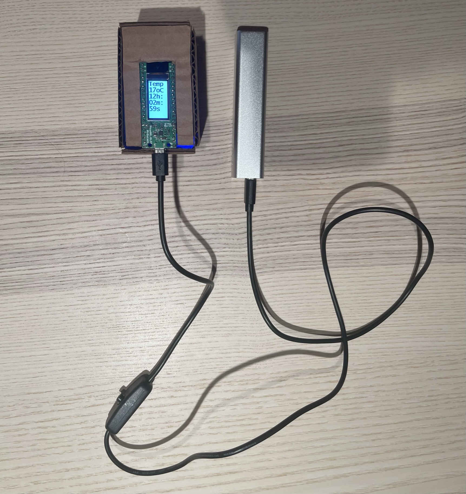

ESE5190 Course Project: Electrooster
Team
Minghui Ni: github
Yizhe Wang: github
Design
Elect-rooster is an intelligent clock system. Current time and temperature are shown on the screen of Pico4ml and the brightness of the screen will be adjusted automatically based on the environment. The rooster will crow every morning when it sees the light.

Feature
Initialization of current time is realized by WiFi module ESP 8266.
Instant temperature is collected by the temperature sensor on Pico4ml.
Another interesting feature is that the brightness of the screen would automatically adjust based on the environment. It will go dark in a dark environment, so your eyes won’t get hurt. This is realized by the average brightness calculation based on the pictures shot by the camera.
Project Instruction
The instruction contains two parts:
1) ESP8266 Configuration
The code can be found here
-
Utilize a ESP8266 programmer and arduino IDE to program this ESP8266
Helpful Links:
-
Then, setup the connection between the ESP8266 and the pico4ml dev kit by 3V3/GND/GP0/GP1/GP26 to ESP01 3V3/GND/RX/TX/EN.
Now, the ESP8266 setup has been finished and you are halfway to have your own rooster!
2) PICO4ML Configuration
For the configuration of the PICO4ML to run the code, please check the readme file here
Demo & Functionality
After finishing both configurations, the ESP8266’s LED will be turned on and keep listening to the get request sent by the PICO4ML through UART. The LED is on demonstrating that the wifi connection has been built and the ESP8266 module keeps sending HTTP GET request to a predetermined time API.
Then, after the time initialization has been finished, the clock function will work continuously. The TFT screen will display the room temperature data and the current time. Additionally, the buzzer will be triggered if the enviroment light level is high enough. This buzzer will have a activited time limit of 40 seconds each day. This limit will be refreshed when the clock reaches the midnight to make sure the electrooster could really work in the morning.
Brightness Control

WiFi Initialization

Rooster

Diagram
PIO Module
In this project, we utilized the PIO module to drive our camera to grab the environmental light level data lively. This data will be used not only in the “rooster” control but also the brightness control of the TFT display. We set a threshold in our main program, when the environmental light level is higher than the threshold, the TFT display will have full lightness. Otherwise, the TFT display will reduce its brightness to protect the user’s vision.
The code can be found here
Components
Pico4ml

Buzzer

WiFi module: ESP 8266

Power Bank

Camera Module: HiMax HM01B0
Temperature sensor: ICM-20948
Screen: 0.96 inch LCD SPI Display
Development Overview
-
Realize screen display
-
Realize temperature measuring
-
Realize time correction
Demo & Console Output

-
Buzzer control by light detection from the camera
-
Complete screen brightness adjusting with the camera
-
WiFi module setup
-
Get initial time from website
Troubleshooting
Temperature Measuring Problem
At first, the data obtained by the temperature sensor is nor correct, which is because of the intrinsic setting on different sensors. We measure the outdoor temperature and indoor temperature as anchor to adjust the algorithms in the code, resulting in accurate temperature measuring.
float temp = 27-(result-0.706)/0.003021;
Time Accuracy Problem
The time is not accurate when we simply set sleep time to 1000 ms in the code. We then record the difference of 100 s and 1000 s of the program and compare it with the real time to adjust the sleep time, which gives us a relative correct timestemp.
Reflection
This system operates independantly without the laptop, which makes it portable and pratical in life. The WiFi module makes the initilization easier without setting the time manually.
The buzzer could be replaced by a speaker which could play different sound to produce a ringtone.
There is a time delay caused by the WiFi module catching time information from the website.
Code Repo
The project repo containing the code and presentation slides can be found here